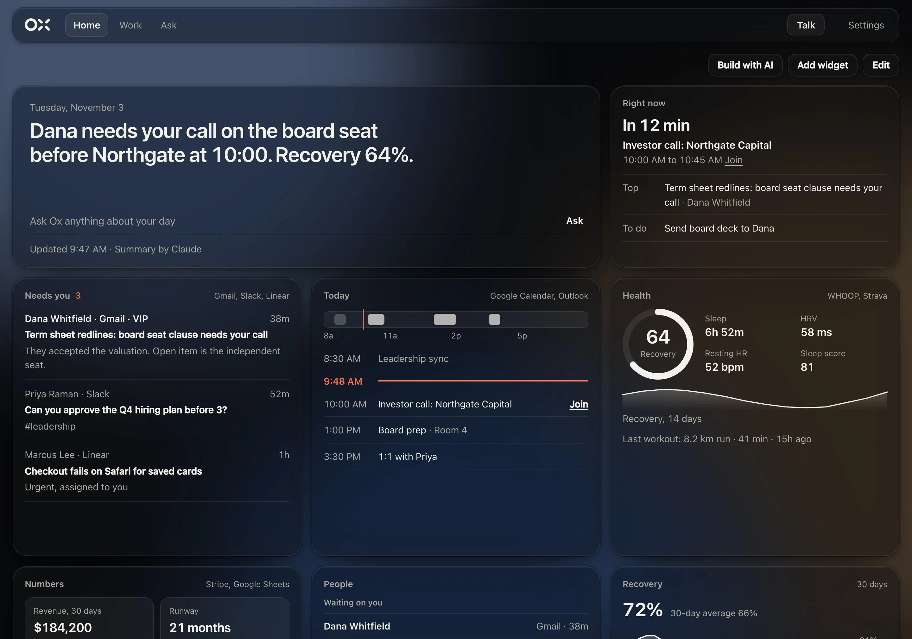
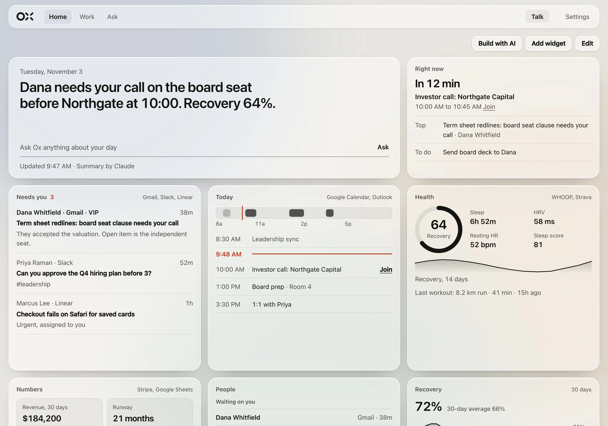
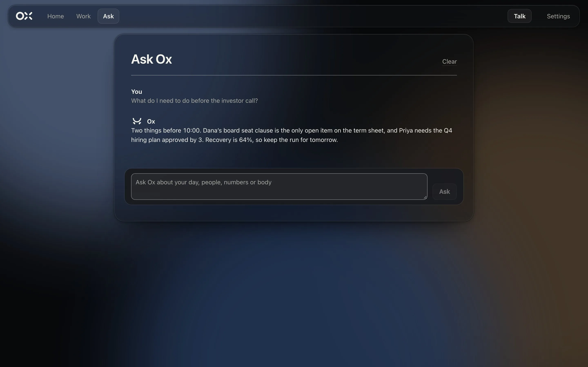
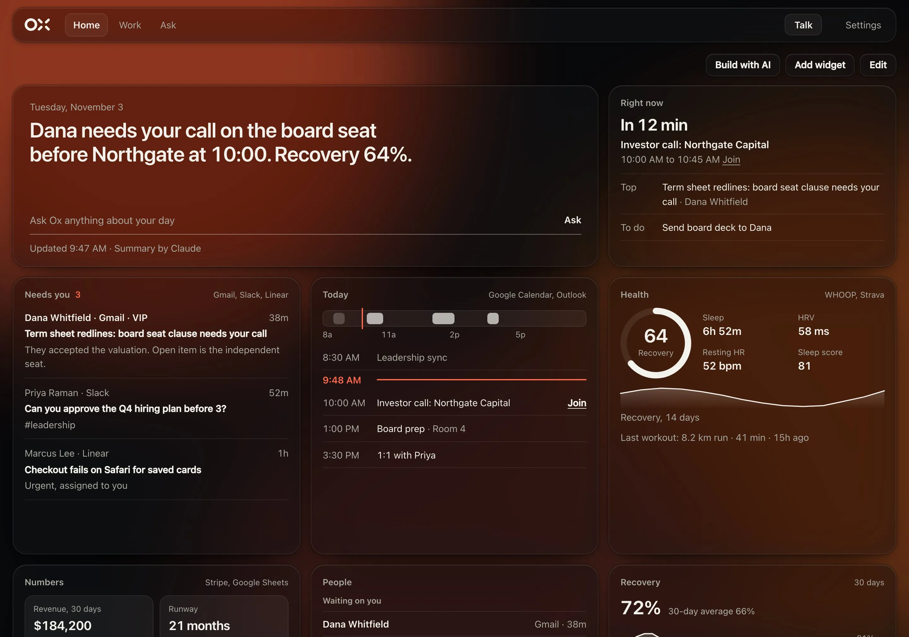
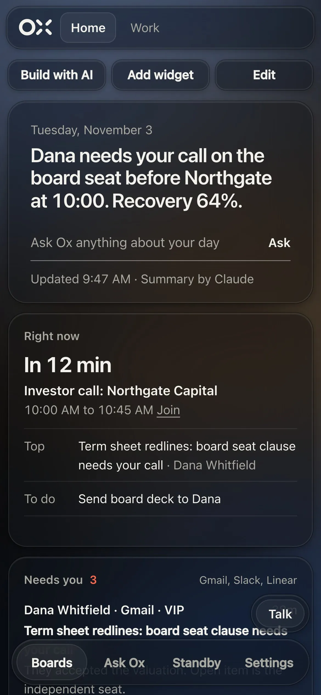
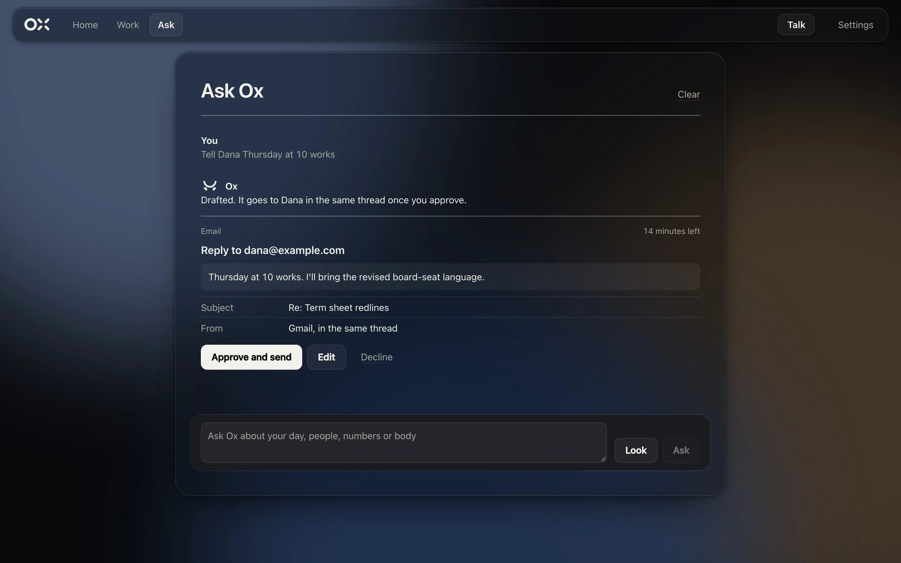
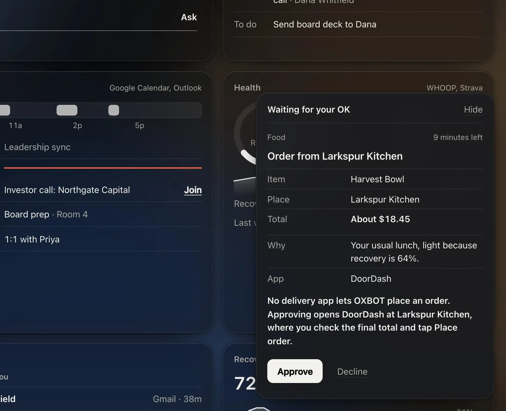
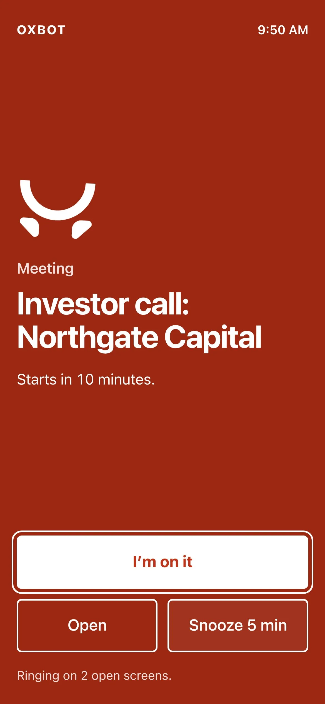

Know what needs you.
It reads your mail, calendar and chat, tells you who needs an answer, and handles it once you say yes.

23 unread emails. 6 Slack mentions. 4 meetings. 1 urgent bug. 3 need you.
What OXBOT tells you at 9:48
Dana needs your call on the board seat before Northgate at 10:00. Recovery 64%.
VIP email always stays.
Rings 10 minutes before.
Last night’s recovery.
Your AI writes the line from these facts. Without one, OXBOT writes it by rule.
One board for the whole day.




You say yes.
It’s handled.
- RepliesEmail, Slack, texts.
- CallsIt rings you, then connects them.
- ApprovalsPull requests, Linear issues.
- LunchOne pick. You confirm in DoorDash.
Tested against sample replies so far.


From Gmail to Canva.
Up to 1,694 apps.
Reads 49 directly and 29 more through Composio. Acts in any of Composio’s apps once you connect them there, always with your OK. Only Gmail is tested live so far.
| App | What OXBOT reads | How |
|---|
Meeting
Investor call: Northgate Capital
Starts in 10 minutes.
The desktop ring screen, rebuilt here.
Then your phone.
Quiet overnight. VIPs still get through.
- 0:00Every screen rings. Your phone gets a push.
- 1:00Still no answer, so it calls you.

Your yes.
Your computer.
- Runs on your computer.Your phone joins over Wi-Fi.
- Nothing goes out without your yes.You see the exact words first.
- Mic and camera stay off.Until you press Talk or Look, or turn on “Hey Ox”.
- No tracking.No analytics, no crash reports.
OXBOT 0.2
Runs on Apple silicon Macs today. Windows and Linux builds exist, not yet tested. Not public.